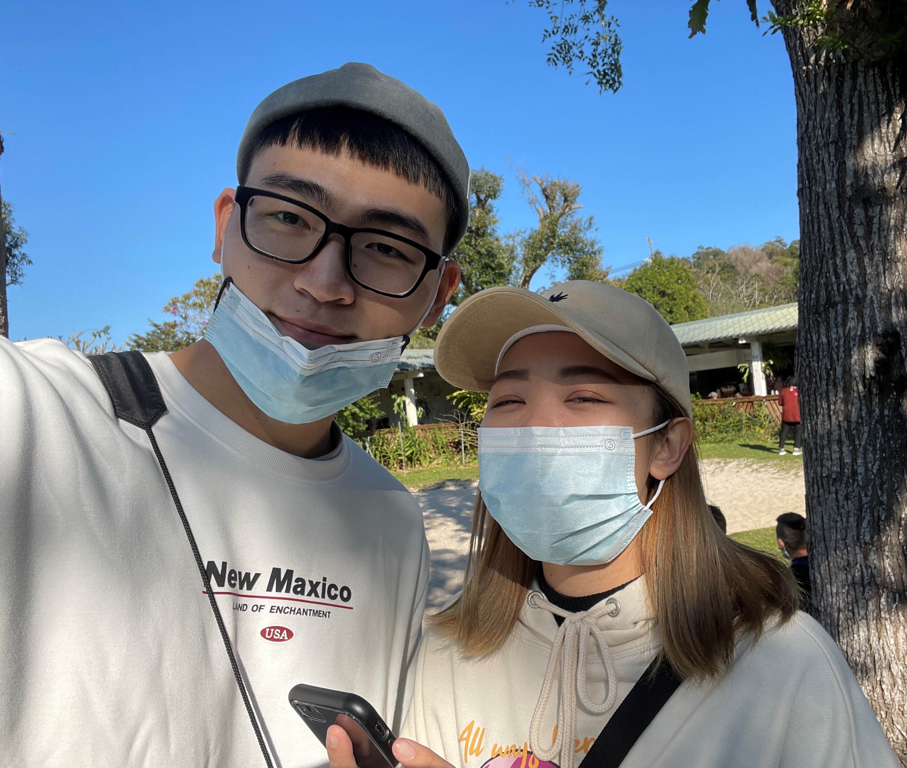

James Pan
TAIWAN | 健行 | 潛盾工程師
我是 James，這是我在 ALPHA Camp
的履歷表專案。為了協助同學們能在課程中能有效學習與成長，我將扮演你的最佳學習夥伴與教練，時時觀測你在平台上的學習與進展，進而提供同學們學習意見與協助。
專業技能
城市入門設計
具備網頁設計的能力，能夠製作使用者介面與線框圖繪製，熟悉 HTML、CSS 和 JavaScript，並對於基礎的演算法有一定的掌握力。
掌握網頁開發
能夠打造兼具前後端的 Web App 產品。從網頁切版、RWD、操作 DOM 事件、使用 AJAX 與串接 API 等前端能力，到使用 Node.js 與 MongoDB 建立後端功能，能夠深入瞭解網路應用程式運作的每個環節，並親手打造自己的產品。
軟體工程師實力
前端部分能夠透過前端框架建立 SPA 頁面，後端則能夠建置完整的登入系統、使用 SQL 與資料庫設計、實作購物車與金流串接。
工作經歷
行銷設計
日商奧村組營造 110/06~現在負責CIS與平面設計並印刷發包、餐點商業攝影、Facebook社群經營文案撰寫、企劃行銷活動、外送電商管理、廠商業務接洽、顧客應對與問題處理以及廚房人員教導，並在轉型期間設計菜單，負責餐點研發與擺盤設計。
資料庫建置
皇昌營造 109/10~110/05負責CIS與平面設計並印刷發包、餐點商業攝影、Facebook社群經營文案撰寫、企劃行銷活動、外送電商管理、廠商業務接洽、顧客應對與問題處理以及廚房人員教導，並在轉型期間設計菜單，負責餐點研發與擺盤設計。
網頁開發
旭源營造 109/07~109/09負責CIS與平面設計並印刷發包、餐點商業攝影、Facebook社群經營文案撰寫、企劃行銷活動、外送電商管理、廠商業務接洽、顧客應對與問題處理以及廚房人員教導，並在轉型期間設計菜單，負責餐點研發與擺盤設計。